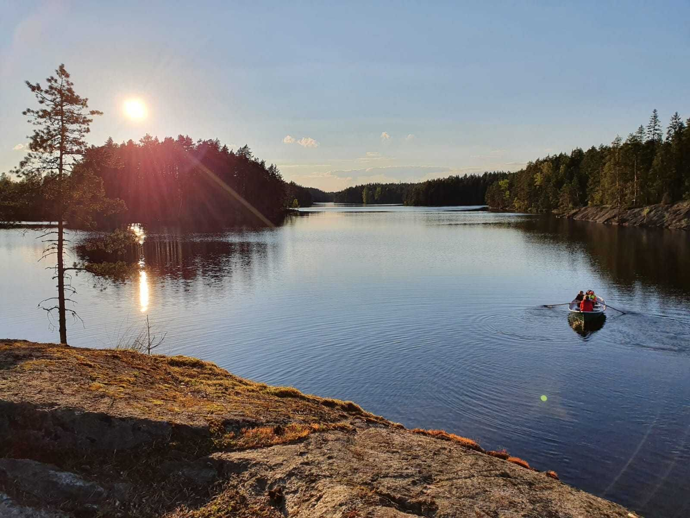

Ajankohtaista
Mitä on tulossa?
Kokoontumiset, retket ja leirit – näin partiovuosi etenee.
Uusia partiolaisia
Ryhmissä on tilaa
Espoon Leppäversoihin otetaan uusia lapsia ja aikuisia. Ryhmissä on tilaa kaikissa ikäryhmissä.
Ryhmät kokoontuvat maanantaisin klo 18–19.30 Valotalolla Matinkylässä ja lähialueen luonnossa. Vuoden aikana käydään myös päivä- ja yöretkillä sekä partiotapahtumissa. Partiovuoden kruunaa kesäleiri.
Partiovuosi
Polku läpi vuoden
- Elo–syyskuu
Partiotoiminta alkaa
Uusi partiovuosi käynnistyy elo–syyskuun vaihteessa. Nyt on paras aika liittyä mukaan!
- Joka maanantai
Viikkokokoukset
Ryhmät kokoontuvat klo 18–19.30 Valotalolla ja lähialueen luonnossa.
- Syksystä kevääseen
Päivä- ja yöretket
Retkillä harjoitellaan erätaitoja, laitetaan ruokaa nuotiolla ja yövytään tulilla.
- Pitkin vuotta
Partiotapahtumat
Tavataan partiolaisia muista lippukunnista ja koetaan yhdessä.
- Kesä
Kesäleiri
Partiovuoden kruunaa kesäleiri.